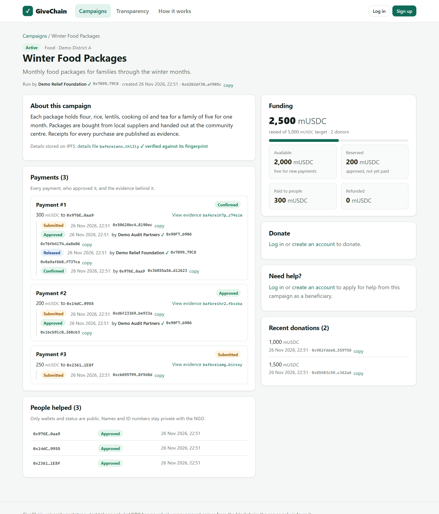
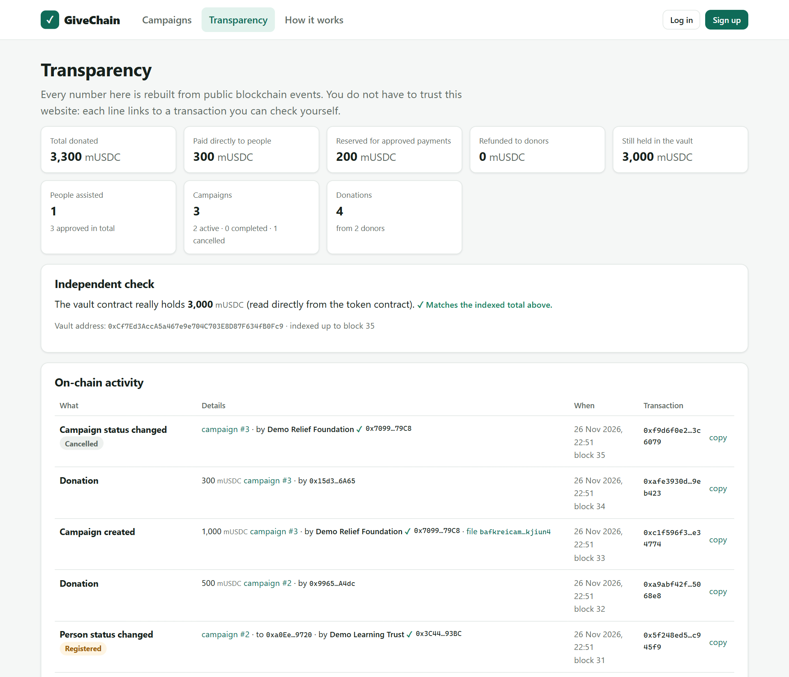
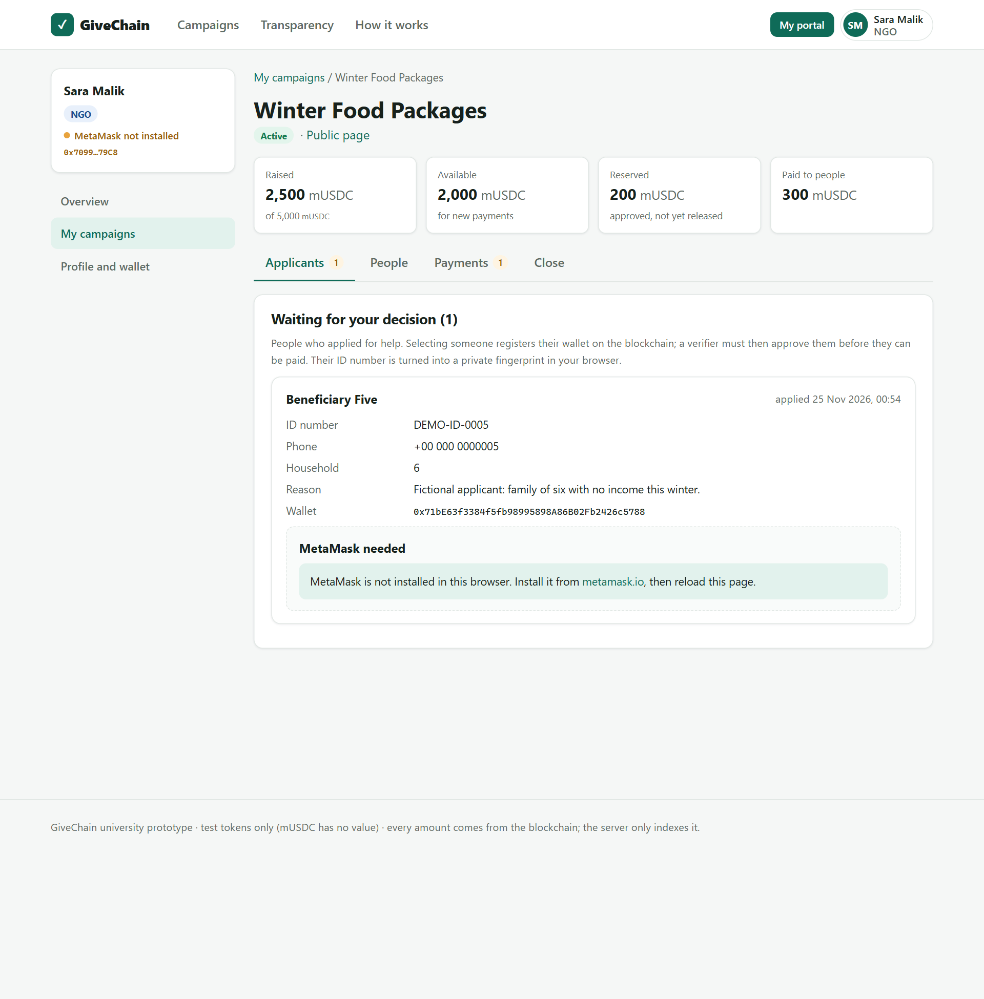
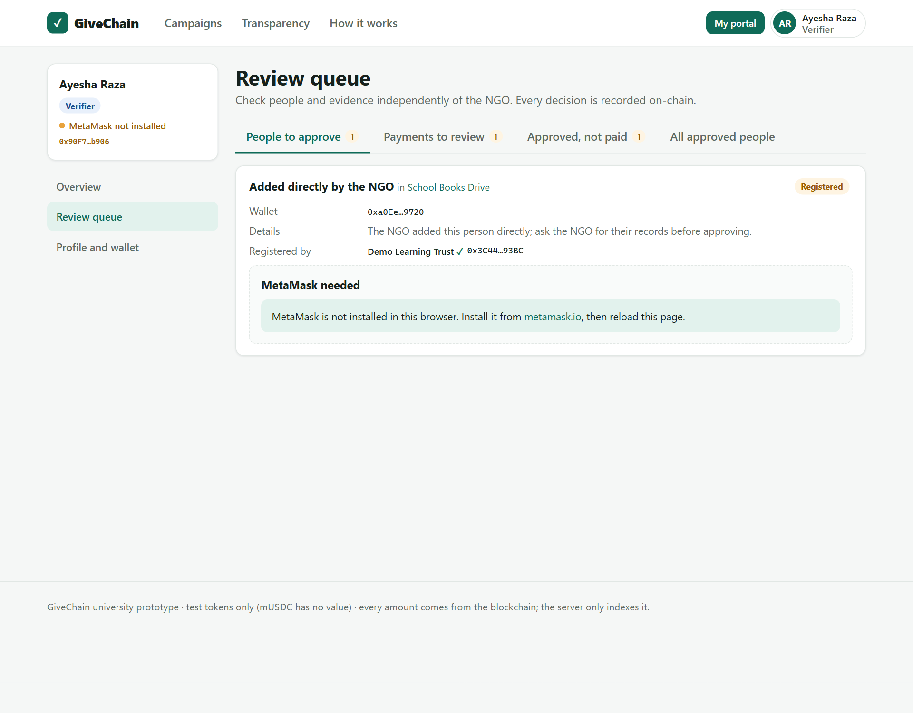

Donors to NGOs usually hand over control of their money and cannot verify how it is spent. GiveChain removes that blind trust: donations are held by a vault contract, the NGO can never take money for itself, and every payment needs an independent verifier's approval before the vault pays the beneficiary's own wallet directly. Every donation, approval, payment, receipt confirmation and refund is a public on-chain transaction. Large and personal data stay off-chain: evidence files live in a content-addressed IPFS store whose fingerprint is fixed on-chain, and beneficiaries appear on-chain only as a wallet and a salted identity hash. This report explains the problem, the architecture and the main design decisions, and presents the gas measurements (a 26.1% saving across a campaign, measured against a documented baseline), the threat model with its tested mitigations, the test results, the known limitations and the team's division of work.
| # | Figure | # | Figure |
|---|---|---|---|
| 1 | Workflow overview | 9 | Transparency page with independent balance check |
| 2 | System components | 10 | NGO portal: applicant selection |
| 3 | Contract inheritance and interaction | 11 | Verifier portal: review queue |
| 4 | Payment sequence across contracts | 12 | Gas: baseline vs optimized |
| 5 | State machines | 13 | Reentrancy attack against the control vault and GiveChain |
| 6 | Evidence flow and integrity checks | 14 | Chain log of one payment (Hardhat node) |
| 7 | Trust boundaries | 15 | Reading a wallet straight from the contracts |
| 8 | Public campaign page |
Sections 1–3 justify the use case. Section 4 is the architecture package (component diagram, inheritance and interaction diagrams, trust boundaries and the on-chain/off-chain data map). Section 5 records the design decisions with their alternatives. Sections 7 and 8 contain the gas and security evidence, section 9 the test results, section 11 the limitations and section 13 the contribution matrix. Appendix A maps every rubric row to its evidence. The full supporting documents are in the repository under docs/: ARCHITECTURE.md, GiveChain-Gas-Sheet.md, GiveChain-Security-Package.md, DEMO.md and CONTRIBUTIONS.md.
When people donate to an NGO, they hand over control of the money and must trust the NGO to spend it as promised. Donors rarely see independent, verifiable records of where each amount went. Misuse is hard to detect, and honest NGOs find it hard to prove that they are honest. Reports published by the NGO itself are not independent evidence, because the same party that spends the money also writes the record.
The problem therefore has three parts:
GiveChain's principle: do not trust the NGO with the money; let a smart contract hold it. Donations sit in a vault contract. Money can leave the vault in only two ways: as a direct payment to a registered, verifier-approved beneficiary after a verifier has reviewed evidence, or as a refund to the donors themselves. Every step is a public, signed transaction.
The target users are small and medium NGOs running local aid campaigns (food packages, school supplies, medical help), their donors, the people who receive help, and an independent verifier (for example an audit partner or a community committee). The prototype uses a test dollar token (MockUSDC) on a local Ethereum chain; no real money is involved.
| Criterion | How GiveChain meets it |
|---|---|
| The NGO cannot take donated money | The NGO wallet never receives tokens; the vault pays only approved beneficiaries (tested: the NGO's balance stays 0 through a full payout, scenario M1) |
| No payment without independent approval | Only a Verifier (on-chain Auditor role) can approve, and never for a campaign it runs or a payment to itself (S5, M5) |
| Anyone can check the record | Every amount on the website is rebuilt from chain events, and the Transparency page compares it with the vault's real token balance (Figure 9) |
| Donors are protected if a campaign ends | Each donor can claim a pro-rata share of unspent money once a campaign is completed or cancelled (M4) |
| Beneficiaries' personal data stays private | Only a wallet and a salted identity hash go on-chain; names and ID numbers are visible only to the campaign's NGO and verifiers |
A blockchain is justified only where several parties who do not fully trust each other must share one record and one set of rules. That is the situation here: donors, the NGO, the verifier and beneficiaries have different interests, and none of them should be the single keeper of the money or of the record.
| Need | Why a blockchain fits | Alternative considered |
|---|---|---|
| Nobody, including the NGO, can quietly move donated money | The vault's rules are code that nobody can change after deployment; there is no admin withdrawal function | A bank escrow account: still controlled by one party, no public rules |
| Donors can verify spending without trusting a website | Balances and every transfer are public; the site's totals can be checked against the chain | A public database: the operator can edit or delete rows |
| Approvals cannot be denied or edited later | Every approval is a signed, timestamped transaction tied to the verifier's key | Signed PDF reports: hard to check and not linked to the money |
| Several organisations share one record without a central owner | A shared ledger with no single owner; roles are enforced by the contracts | A central platform: one company becomes the trusted party |
keccak256 of the content identifier), so the file can never be swapped without detection.| Role | Kind | Can | Cannot |
|---|---|---|---|
| Admin | On-chain role | Grant and revoke roles (approve NGO and verifier applications), cancel any campaign | Move money, approve anything, redirect payouts |
| Pauser | On-chain role | Pause and unpause every state change in all contracts | Anything else |
| NGO | On-chain role | Create and close its own campaigns, select and register beneficiaries, submit payment requests with evidence, release approved payments | Approve its own requests, pay itself, act on other NGOs' campaigns |
| Verifier (contract name: Auditor) | On-chain role | Approve or revoke beneficiaries; approve, reject or cancel payment requests | Act on a campaign it runs, approve a payment to itself, release money. One wallet can never be both NGO and Verifier |
| Donor | Any wallet | Donate to a campaign, claim a refund from a closed campaign | Refund twice or refund from a running campaign |
| Beneficiary | Any wallet registered in a campaign | Apply for help, receive payments, confirm receipt | Confirm someone else's payment |
Each workflow is a sequence of real transactions with lifecycle transitions; together they give six user workflows and five distinct roles, well above the minimum of three workflows and two roles.
| Action (contract function) | Admin | NGO | Verifier | Pauser | Donor | Beneficiary |
|---|---|---|---|---|---|---|
| Grant / revoke roles | ✓ | |||||
| Pause / unpause | ✓ | |||||
createCampaign, completeCampaign | ✓ own | |||||
cancelCampaign | ✓ any | ✓ own | ||||
registerBeneficiary | ✓ own campaign | |||||
approveBeneficiary, revokeBeneficiary | ✓ not self | |||||
submitMilestone, releaseMilestone | ✓ own campaign | |||||
approveMilestone, rejectMilestone | ✓ not own campaign / not payee | |||||
cancelMilestone | ✓ | |||||
donate | anyone with tokens | |||||
claimRefund | ✓ own share | |||||
confirmReceipt | ✓ own payment | |||||
GiveChain has three layers. The smart contracts hold the money and enforce every rule. The browser (React frontend plus MetaMask) lets each person act with their own key. The off-chain backend stores files, indexes chain events for fast reading and manages logins. Only the contracts are trusted; the frontend and backend are conveniences whose data can always be re-checked against the chain.
GiveChainAccess instead of storing them, so a login can never grant power.| Component | Job | Trusted for |
|---|---|---|
| Smart contracts | Hold the money and enforce every rule | Everything involving money and permissions |
| MetaMask | Holds each user's private key and signs transactions | Proving which key is acting |
| React frontend | Public site and one portal per role | Nothing; contracts re-check everything |
| Backend: IPFS store | Stores evidence and campaign details by content identifier (CID) | File integrity (the CID changes if the file changes), not that the file is true |
| Backend: indexer + API | Copies chain events into a searchable in-memory index | Convenience only; rebuilt from the chain on every start |
| Backend: accounts | Email/password logins, linked wallets, applications | Which portal to show; never which on-chain actions are allowed |
The system is split by responsibility, not by file. Each contract owns one kind of data. Inheritance is used where behaviour is identical across contracts; composition through interfaces is used where contracts must cooperate without trusting each other's internals.
IGiveChainAccess, IProjectRegistry, IDonationVault).| Contract | Responsibility | Lines |
|---|---|---|
GiveChainAccess | All roles and the single emergency pause; refuses NGO + Auditor on one wallet. Inherits OpenZeppelin AccessControl and Pausable | 71 |
AccessControlBase (abstract) | Inherited by the three workflow contracts: onlyRole and whenNotPaused modifiers (both ask GiveChainAccess) and the reentrancy guard | 55 |
ProjectRegistry | Campaign and beneficiary life cycles, duplicate-person protection; holds no money | 300 |
DonationVault | Holds all tokens; per-campaign accounting; donations, reservations, payouts, pro-rata refunds | 323 |
MilestoneDisbursement | Payment workflow (submit, approve, reject, release, cancel, confirm); holds no money | 261 |
MockUSDC | Test dollar token, 6 decimals, capped faucet | 32 |
Interfaces + Roles library | All contract-to-contract calls; shared role identifiers | 120 |
Why inheritance: the role check, the pause check and reentrancy protection are identical in three contracts, so they are written once in AccessControlBase. A change to how permissions are checked is made in one place and tested once (12 tests through a harness contract). Why a separate access contract instead of inheriting AccessControl three times: roles are granted once and one pause switch stops everything; with per-contract roles the NGO role had to be granted three times and an emergency needed three pause calls (a problem in the first prototype). Why composition between the workflow contracts: each contract owns one kind of data and exposes only what others need. The vault does not need to know about milestones, and the milestone contract does not hold money, so a bug in one cannot silently corrupt the other's state.
Figure 4 shows how the contracts cooperate for one payment. The key property is that the vault re-checks everything itself even though only MilestoneDisbursement may call it (decision D3 in section 5).
All non-trivial behaviour is expressed as explicit state machines. Every function first checks the current state, which is also what blocks duplicate and replayed actions.
ProjectRegistry and MilestoneDisbursement; the vault keeps a matching reservation state (Reserved → Released or Cancelled).The vault keeps four numbers per campaign: donated, reserved, released and refunded. The money a campaign can still promise is available = donated − reserved − released − refunded. Approving a payment moves money from available to reserved; releasing moves it from reserved to released; cancelling returns it to available. An invariant test checks after a long mixed sequence that the vault's token balance equals the sum over all campaigns of donated − released − refunded.
Refund rule. When a campaign is Completed or Cancelled, a donor may claim once: refund = contribution × (donated − released) / donated. Example: a campaign raised 1,000 and paid out 400 before it was cancelled. A donor who gave 100 (10%) gets back 10% of the remaining 600, which is 60.
| Data | Where it is stored | Reason |
|---|---|---|
| Campaign id, NGO wallet, target, status | On-chain (storage) | Contract rules depend on it |
| Campaign title, description | IPFS; full CID in the CampaignCreated event, keccak256(CID) in storage | Too large for the chain; the stored hash fixes which file was published |
| Beneficiary wallet and status | On-chain | Payouts depend on it |
| Beneficiary identity commitment | On-chain: keccak256(ngoKey, normalisedId), computed in the NGO's browser | Blocks registering the same person twice without revealing who they are |
| Names, ID numbers, phone, reason for applying | Backend accounts store, visible only to the campaign's NGO and to verifiers; never on-chain | Personal data must not be published permanently |
| Payment amount, beneficiary, status, approver | On-chain | Rules and transparency depend on it |
| Evidence files (receipts, photos) | IPFS; full CID in the MilestoneSubmitted event, hash in storage | The CID proves the file is unchanged; the verifier judges whether it is true |
| Donations, reservations, payouts, refunds | On-chain balances and events | The transparency promise |
| Searchable history and totals | Backend in-memory index | Rebuilt from chain events on every start; disposable |
| Email, password hash, display name, linked wallet | Backend accounts store (scrypt hashes) | Needed to log in; never decides permissions |
| Private keys, seed phrases | Only in each user's MetaMask | Never in the repository, the backend or the chain |
backend/test/ipfs.test.js (a tampered file is refused); check B in test/Security.test.js (S6).| Failure or attack | What happens |
|---|---|
| Backend restarts, or the chain is redeployed | The index is rebuilt from block 0 (or the deployment block); after a redeploy it detects the new addresses and starts over |
| Backend serves a wrong number | The Transparency page reads the vault's real token balance from the chain and shows whether it matches (Figure 9) |
| A stored file is changed on disk | Its hash no longer matches its CID, so the backend refuses to serve it |
| The website shows stale data after a transaction | After each confirmed transaction the frontend waits until the backend has indexed that block before refreshing lists |
| Someone edits the accounts file to make themselves an NGO | Nothing changes on-chain; NGO tools stay locked because the role is read from GiveChainAccess |
The table records the decisions that shaped the system, the alternatives that were considered and the consequences that were accepted. Several came directly from a design review of the first prototype (section 6.4).
| # | Decision | Alternatives considered | Why this option | Consequence accepted |
|---|---|---|---|---|
| D1 | Money is held by a vault contract; the NGO never holds it | Donations sent to the NGO's wallet; NGO-controlled multisig | Removes custody risk entirely: misuse requires breaking the contract rules, not just a decision by the NGO | NGOs cannot pay suppliers directly; payments go to registered beneficiaries |
| D2 | One GiveChainAccess contract for roles and pause; checks inherited from an abstract AccessControlBase | Each contract inherits OpenZeppelin AccessControl and Pausable itself | Roles granted once, one emergency switch, identical checks everywhere, written and tested once | Each protected call makes an external call to the access contract (extra gas on every action) |
| D3 | The vault re-checks eligibility, campaign status, balance and duplicates even though only one contract may call it | Trust the workflow contract's checks | Defence in depth: a bug in the workflow contract cannot pay the wrong person (tested with a mock caller that skips all checks) | About 5,000–10,000 extra gas per payout; kept deliberately (security over gas) |
| D4 | The vault's caller is set once and can never change | An admin setter | A stolen admin key cannot redirect payouts to a malicious contract (M3) | A fix to the workflow contract means redeploying the vault too |
| D5 | Separate accounting per campaign, with reservations on approval | One shared pool (first prototype); check balance only at release | Campaign A can never spend campaign B's money (M2); two approvals can never together exceed the balance (S7) | More storage per campaign; reduced by struct packing |
| D6 | Pro-rata refunds after a campaign closes, claimed by each donor | Full refunds first-come-first-served; refunds closing for everyone at the first payout (first prototype) | Fair to every donor whatever the order of claims; no donor loses rights because of another campaign | Integer division leaves a few units (millionths of a dollar) in the vault |
| D7 | A stable test token (MockUSDC, 6 decimals) with SafeERC20 | ETH donations (first prototype) | Aid budgets are in currency, not a volatile asset; matches how stablecoins are used; the specification asked for a mock ERC-20 | Donors need a token approval before donating (two transactions) |
| D8 | Store keccak256(CID) on-chain and the full CID in events; addresses immutable; packed structs | Store CID strings; mutable addresses; one value per slot | 26.1% less gas per campaign with integrity unchanged (section 7) | CIDs read from events, not a view call; vault deployment +15.8% |
| D9 | Identity commitment keccak256(ngoKey, normalisedId) computed in the browser; ngoKey derived from a deterministic wallet signature | Store the ID; hash without a key; a random salt per person | No personal data on-chain; the key stops guessing IDs from the hash; determinism lets the contract reject the same person under a new wallet | Duplicates are blocked within a campaign; a person may still be helped by several campaigns (intended) |
| D10 | Disposable in-memory indexer rebuilt from chain events | A database as the source of truth (SQLite was planned) | The index can never drift from the chain for long and needs no migration; simpler to reason about | Start-up time grows with chain length (fine for a prototype) |
| D11 | Email accounts off-chain; permissions always read from the chain | Wallet-only login; roles stored in the backend | Familiar login for non-technical users, while a compromised backend still cannot grant power | A second store to secure (scrypt hashes, HttpOnly sessions, rate limits) |
| D12 | One global pause that stops every state change, including refunds | Per-function pauses; refunds exempt | Simple and predictable in an emergency; one switch | Donors wait for refunds while paused |
| D13 | Separation of duties: a wallet can never be both NGO and Auditor; approvers cannot act on their own campaign or payment | Rely on the admin to grant roles carefully | Removes the simplest fraud: approving your own request (M5, S5) | Small organisations need two different people |
AccessControl, Pausable, ReentrancyGuard, ERC20, SafeERC20 and SafeCast.InsufficientAvailableFunds(campaignId, requested, available)), which the frontend decodes into plain English; NatSpec on every public function.scripts/deploy.js), writing addresses and ABIs to deployments/<network>.json, which the backend and frontend read.HttpOnly SameSite=Lax cookies (one cookie name per network), a login rate limit, and wallet linking by a signed one-time challenge checked with verifyMessage.
npm run seed:local). Funding is split into available, reserved, paid and refunded, read from the vault. Each payment shows its full history (submitted, approved by the verifier, released by the NGO, confirmed by the beneficiary) with transaction hashes, and its evidence CID. The details file is marked as verified against its fingerprint. Only wallets and statuses of beneficiaries are public.


The team's first prototype (kept unchanged in legacy/) had three contracts sharing an inherited base, 47 tests, first gas experiments and a security document. A design review against the specification found problems that shaped the final design:
| First prototype | Problem | Final design |
|---|---|---|
| One shared ETH pool for all campaigns | Campaign A could spend campaign B's donations | Separate accounting per campaign (D5) |
| The first payout closed refunds for all donors | Unrelated donors lost their refund rights | Per-campaign, pro-rata refunds after closing (D6) |
| Vault paid whatever address the caller named | The vault trusted the workflow contract blindly | Vault re-checks eligibility, status, funds and duplicates (D3) |
| ETH donations | Volatile value; specification asked for a mock ERC-20 | MockUSDC with SafeERC20 (D7) |
| Roles and pause in each contract | NGO role granted three times; three pause switches | One GiveChainAccess (D2) |
| Approve and pay in one step, no receipt | Missing workflow steps | Submit → approve → release → confirm, plus reject and cancel |
| Gas savings of 78 and 163 gas (≈0.1%) on toy contracts | Weak evidence | 26.1% per campaign, measured on the real contracts (section 7) |
| No frontend, backend or IPFS | Hybrid design and DApp components missing | Backend with IPFS, indexer, accounts; React + MetaMask frontend |
| Item | Setting |
|---|---|
| Baseline | contracts/gas-baseline/Baseline*.sol: exact copies of the clarity-first Phase 2 contracts, changed only by a name prefix |
| Optimized | The real contracts in contracts/ |
| Tool | scripts/gas-benchmark.js, run with npm run gas; cross-checked with hardhat-gas-reporter (npm run test:gas) |
| Measurement | receipt.gasUsed of each transaction (includes the 21,000 base cost and calldata) |
| Equal conditions | Both systems run the same 13-step workflow with the same accounts and inputs on the Hardhat in-process network; the chain is reverted to a snapshot between runs, so even contract addresses are identical. Same compiler and optimizer settings |
| Fairness check | Before any optimization the script reported identical gas for every action (12 gas difference at deployment, caused by the contract name) |
| Not counted | Custom errors: the baseline already uses them (the first prototype measured that saving separately) |
docs/gas-results.json, produced by npm run gas).| Operation | Baseline | Optimized | Saved | Change |
|---|---|---|---|---|
| createCampaign | 197,858 | 106,973 | 90,885 | −45.9% |
| registerBeneficiary | 109,414 | 105,162 | 4,252 | −3.9% |
| approveBeneficiary | 43,044 | 40,783 | 2,261 | −5.3% |
| donate (donor's first gift) | 123,102 | 117,076 | 6,026 | −4.9% |
| donate (repeat gift) | 71,802 | 65,776 | 6,026 | −8.4% |
| submitMilestone | 237,472 | 140,203 | 97,269 | −41.0% |
| approveMilestone (reserves funds) | 216,583 | 134,871 | 81,712 | −37.7% |
| releaseMilestone (pays beneficiary) | 148,499 | 110,594 | 37,905 | −25.5% |
| confirmReceipt | 38,040 | 33,903 | 4,137 | −10.9% |
| rejectMilestone | 61,251 | 41,911 | 19,340 | −31.6% |
| cancelMilestone (frees funds) | 63,936 | 60,607 | 3,329 | −5.2% |
| completeCampaign | 41,923 | 37,668 | 4,255 | −10.1% |
| claimRefund | 110,511 | 85,482 | 25,029 | −22.6% |
| Total, one campaign life cycle (13 actions) | 1,463,435 | 1,081,009 | 382,426 | −26.1% |
| Deploy ProjectRegistry | 1,386,781 | 1,272,321 | 114,460 | −8.3% |
| Deploy DonationVault | 1,433,203 | 1,659,791 | −226,588 | +15.8% |
| Deploy MilestoneDisbursement | 1,386,242 | 1,321,908 | 64,334 | −4.6% |
The optimizations were applied one at a time and the benchmark was run after each step (cumulative columns).
| Operation | Baseline | + Opt 1 immutable | + Opt 2 packing | + Opt 3 CID hash |
|---|---|---|---|---|
| createCampaign | 197,858 | 195,598 | 151,754 | 106,973 |
| donate (first gift) | 123,102 | 116,754 | 117,076 | 117,076 |
| submitMilestone | 237,472 | 232,912 | 184,967 | 140,203 |
| approveMilestone | 216,583 | 205,875 | 134,871 | 134,871 |
| releaseMilestone | 148,499 | 135,679 | 110,594 | 110,594 |
| cancelMilestone | 63,936 | 57,437 | 60,607 | 60,607 |
| claimRefund | 110,511 | 104,166 | 85,482 | 85,482 |
| Deploy DonationVault | 1,433,203 | 1,437,124 | 1,659,791 | 1,659,791 |
The full table for all 16 rows is in docs/GiveChain-Gas-Sheet.md §3.
immutable contract addressesThe addresses of the access contract, token, registry and vault are fixed at deployment and became immutable. An immutable value is written into the bytecode, so reading it is a cheap code read instead of a cold storage read (SLOAD, 2,100 gas the first time in a transaction). Every protected function reads the access address at least twice (role and pause checks), and payouts cross three contracts. Measured: about 2,100–2,300 gas on simple actions, up to 12,820 on releaseMilestone. Trade-off: deployment 0.3–1.1% more expensive; addresses can never change, which matches D4 and is a security benefit.
Struct fields were reordered and narrowed so several share one 32-byte slot: Campaign (owner + status + uint40 timestamp in one slot), CampaignFunds (4 slots → 2, with reserved and released together because a payout changes both), Reservation (4 → 2) and Milestone (6 → 3). Writing a new slot costs about 22,100 gas and a cold read 2,100, so fewer slots means fewer of both. Recording the approver now overwrites an already-used slot (≈2,900 gas) instead of filling an empty one (≈22,100), a large part of approveMilestone's saving. Narrowed values use OpenZeppelin SafeCast, so an overflowing amount reverts instead of wrapping.
Campaign and evidence CIDs (≈59 characters, three storage slots ≈ 66,000 gas) were replaced by a one-slot bytes32 keccak256 hash; the full CID is published in the event, where data costs about 8 gas per byte. Measured: −44,781 on createCampaign and −44,764 on submitMilestone relative to step 2, and cheaper deployment of two contracts (no string handling). Integrity is unchanged: anyone can hash the CID from the event and compare it with storage (Figure 6, check B).
| Trade-off (measured) | Why it was accepted |
|---|---|
| DonationVault deployment +15.8% (SafeCast checks and bit masking) | Paid once; every campaign after that is cheaper |
donate +322 gas versus step 1 (SafeCast overflow check) | Safety of narrowed amounts; still −4.9% overall |
cancelMilestone +3,170 versus step 1: reserved now shares a slot with released, so clearing it no longer earns the gas refund for zeroing a slot | Cancellation is rare; still −5.2% overall |
| CIDs must be read from events, not a view function | The indexer reads events anyway; no contract needs the CID |
| Struct order follows storage layout, not logic | Documented with slot comments in each struct |
| Rejected idea | Reason |
|---|---|
| Remove the vault's re-checks (≈5,000–10,000 gas per payout) | Would remove defence in depth (D3): security over gas |
| Combine the role and pause checks into one external call | Small saving for a less readable base contract |
| Emit-only campaigns with no storage | Vault and milestone contract must read status and owner on-chain |
| Asset | Why it matters |
|---|---|
| Tokens held by the vault | Donor money; the main target |
| Per-campaign accounting | If wrong, campaigns spend each other's money or refunds over-pay |
| Roles | Control approvals and the pause |
| Beneficiary and milestone status | Decide who and what can be paid, and only once |
| Vault → workflow link | The only path for payouts |
| Beneficiary privacy | Personal data must never reach the chain |
| Actor | Possible goal |
|---|---|
| Dishonest NGO | Pay itself or a fake beneficiary; spend another campaign's money |
| Dishonest verifier | Approve own campaign or a payment to itself |
| Thief with the admin key | Redirect payouts, appoint accomplices |
| Donor | Refund twice or take others' money |
| Attacker contract / token | Re-enter the vault during a transfer |
| Outsider | Any unauthorized call; act while paused |
Trust boundaries are shown in Figure 7. The contracts treat every caller as untrusted except for the narrow powers of the admin, pauser and verifier.
| Control | Where | Why it is needed |
|---|---|---|
| Role-based access control (single source) | GiveChainAccess + onlyRole | Roles granted once and checked identically everywhere |
| Separation of duties | GiveChainAccess, approveMilestone, approveBeneficiary | Nobody can both request and approve, or approve themselves |
| Ownership checks | Registry, MilestoneDisbursement | An NGO acts only on its own campaigns |
| Explicit state machines | Campaign, beneficiary, milestone, reservation | Blocks duplicates, replays and out-of-order actions |
| Input validation | Zero amounts and addresses, empty CIDs and commitments | Rejects meaningless or malformed requests |
| Per-campaign accounting + reservations | DonationVault | A campaign can only promise its own available money |
| Independent re-validation | reserveFunds, releaseFunds | A workflow bug cannot misdirect money |
| One-time vault link | setDisbursementContract | A stolen admin key cannot redirect payouts |
| Checks-effects-interactions | donate, claimRefund, releaseFunds, approve/release | State is final before any external call |
| Reentrancy guard | nonReentrant on every function that moves tokens or calls the vault | A second, independent layer against re-entry |
| Safe external calls | SafeERC20; calls only to known, fixed addresses | Handles tokens that return false instead of reverting |
| Global emergency pause | pause + whenNotPaused on all 14 state-changing functions | One switch stops everything; reads keep working |
| Overflow-safe narrowing | SafeCast on packed values | Packed uint128/uint96/uint40 values revert instead of wrapping |
| Privacy by design | Identity commitment only | Detects duplicates without publishing who people are |
| Id | Threat | Mitigation | Evidence in test/Security.test.js |
|---|---|---|---|
| S1 | Unauthorized release | onlyRole(NGO) + ownership; vault accepts only its fixed caller | Strangers, other NGOs, auditors, admin and beneficiaries rejected; vault balance unchanged |
| S2 | Reentrancy on refund | nonReentrant + refund recorded before transfer | Attacker re-entry blocked; control test steals from a vulnerable vault (Figure 13) |
| S3 | Duplicate beneficiary | Status per wallet + identity commitment per campaign | Same wallet rejected; same person under a new wallet rejected (IdentityAlreadyUsed) |
| S4 | Repeated distribution | Milestone status + vault reservation status | Release called four times pays once; the vault alone also refuses a second payout |
| S5 | Unauthorized approval | onlyRole(AUDITOR); approver ≠ campaign NGO or payee | NGO, admin, donor, beneficiary, stranger rejected; ex-NGO auditor cannot approve own campaign |
| S6 | Missing or swapped evidence | Empty CID rejected; no function edits evidence | Submission without evidence fails; stored hash matches the event's CID |
| S7 | Release without funds | Approval reserves; vault checks available balance | Over-sized approval fails; two approvals cannot exceed the balance |
| S8 | Actions while paused | whenNotPaused everywhere | All 14 functions revert with SystemPaused; reads work; only pausers can pause |
| Id | Misuse | Mitigation | Evidence |
|---|---|---|---|
| M1 | NGO pays itself | Cannot register own wallet; every beneficiary needs a verifier; money goes only to the beneficiary | Own-wallet registration fails; unapproved sockpuppet cannot be paid; NGO balance stays 0 |
| M2 | One campaign drains another | Per-campaign accounting | A campaign with 0 donated cannot reserve 1 unit while the vault holds 1,000 for another |
| M3 | Admin key stolen | Admin has no money powers; vault link permanent | Admin cannot release, approve or relink; cancelling only lets donors take back their money |
| M4 | Refund abuse | Only when closed, once, pro-rata of unspent money | Refund while running, second claim and non-donor claim fail; paid-out money not refunded |
| M5 | Conflicting roles | NGO + Auditor refused on one wallet | Both grant orders rejected |
A test without a control can pass for the wrong reason. The reentrancy test therefore runs the same attacker twice: against GiveChain and against a deliberately vulnerable vault that transfers before updating state and has no guard.
contracts/mocks/HookToken.sol, RefundReentrancyAttacker.sol, VulnerableRefundVault.sol; test: S2 in test/Security.test.js.| Threat | Mitigation | Evidence (backend/test) |
|---|---|---|
| Stolen password database | scrypt with random salt; passwords never returned | "stores only a scrypt hash of the password" |
| Password guessing | 10 failures per email or IP per 15 min → HTTP 429; same message for unknown email and wrong password | "blocks repeated wrong passwords" |
| Session theft | Random token in HttpOnly, SameSite=Lax cookie; only its hash stored; password change ends other sessions | "logs in with an HttpOnly cookie" |
| Linking someone else's wallet | One-time challenge signed in MetaMask, checked with verifyMessage; one wallet per account | "links a wallet only with a valid signature" |
| Self-promotion through the database | Approval and admin pages require the on-chain role | "becomes approved only when the role is on-chain" |
| Leaking beneficiary data | Applications visible only to the campaign's NGO and verifiers | "keeps applicant details private" |
| Tampered or spoofed IPFS content | Every read re-hashed against the CID, also for gateway content; uploads need a login | "rejects gateway content that does not match the CID" |
All automated tests pass: 238 Hardhat tests (npm test) and 34 backend tests (npm run backend:test), 272 in total, re-run on 26 November 2026 for this report.
| Suite | Tests | What it covers |
|---|---|---|
GiveChainAccess | 16 | Roles, separation of duties, pause |
AccessControlBase | 12 | Modifiers through a test harness |
MockUSDC | 9 | Faucet limits, ERC-20 behaviour |
ProjectRegistry | 52 | Campaign and beneficiary life cycles, duplicates, permissions |
DonationVault | 54 | Per-campaign isolation, reservations, payouts, refunds and rounding, accounting invariant |
MilestoneDisbursement | 44 | Full milestone life cycle, permissions, separation of duties |
| End-to-end | 1 | Deploy → campaign → donations → payments → refunds; the books balance to zero |
| Security scenarios | 32 | S1–S8, M1–M5, reentrancy with control |
| Backend indexer + API | 18 | Index equals on-chain state, rebuild, REST endpoints, uploads |
| Backend IPFS | 16 | CID correctness, tamper detection, limits, path tricks, gateway verification |
| Backend accounts | 18 | Hashing, sessions, rate limiting, wallet-link signatures, on-chain role checks, privacy |
| Total | 272 | All passing |
The complete story was clicked through on a live local chain with MetaMask: the admin granting a role, the NGO selecting an applicant, a verifier approving the person and a payment, a donor using the faucet and donating, the NGO releasing payments, and the beneficiary confirming receipt. In an earlier browser test, a deliberate duplicate registration of the same ID under another wallet failed with its decoded reason (IdentityAlreadyUsed). On Ganache, deployment, seeding, backend indexing, a demo login linked to a Ganache account and a donation through the website were tested. Every action appears in the node log as a transaction from the acting person's own wallet; the hashes match the ones the website shows (Figure 14 and Figure 8 show the same four payment hashes).
scripts/inspect.js uses only the contracts (no backend, no website), so it independently confirms what the website shows: the beneficiary holds the 300 mUSDC paid in Figure 14.| Item | Detail |
|---|---|
| Local chains | Hardhat Network (npm run node, port 8545, chain 31337) and Ganache (port 7545, chain 1337) with :ganache variants of every command |
| Public testnet | Sepolia network entry in hardhat.config.js, reading the RPC URL and deployer key from .env (not committed); not deployed for this submission |
| Deployment | npm run deploy:local deploys, links and grants roles and writes deployments/localhost.json (addresses, ABIs, start block) |
| Demo data | npm run seed:local creates three campaigns in different states with real IPFS CIDs, donations and payments in every status |
| Configuration | Local runs need no .env; .env.example documents the optional settings |
| Secrets | No private keys or seed phrases in the repository; .env is git-ignored. The only keys used are Hardhat's and Ganache's publicly known test accounts |
| Fresh-clone check | In Phase 8, a fresh clone from GitHub installed, passed all tests, built the frontend and ran the gas benchmark using only the README commands |
The complete run instructions are in Appendix B and in README.md and docs/DEMO.md.
| Limitation | Effect | Possible future work |
|---|---|---|
| The verifier is a human judgement (oracle problem) | The chain proves what was approved and paid, not that aid was delivered or who owns a key | Several verifiers with an M-of-N threshold; field confirmations |
| Collusion between an NGO and a verifier | Made public and permanent, but not prevented | Random assignment of verifiers; reputation and stake |
| A single admin key appoints roles | A stolen key could appoint a fake NGO and verifier (who still cannot touch other campaigns' money) | Multisig admin and a timelock on role changes |
| Pausing also blocks refunds | Donors wait during an emergency | Allow refunds from closed campaigns while paused |
| Closing a campaign voids approved but unpaid payments | Their money becomes refundable; the UI warns the NGO | Grace period for releases |
| Rounding in pro-rata refunds | A few millionths of a dollar remain in the vault | Sweep of dust to the last claimant |
| Standard ERC-20 tokens only | Fee-on-transfer or rebasing tokens would break accounting | Balance-difference accounting or a token allow-list |
| Contracts are not upgradeable | A bug fix means redeploying | Proxy pattern with a timelocked upgrade |
| Duplicate detection is per campaign and per NGO key | The same person can receive help from several campaigns or NGOs (allowed by design, but not limited) | A shared, privacy-preserving identity registry with cross-campaign limits |
| Accounts are prototype level | No email verification, password reset by email or two-factor login; applicant data not encrypted at rest; JSON file instead of a database | Proper database, encryption, verification flows |
| Index kept in memory | Start-up time grows with chain length | Persistent index with checkpoints |
| IPFS availability | Files persist only while pinned; Pinata mode implemented but not tested against the live service | Pinning service with redundancy |
| Evidence of security is from tests | Static analysis (for example Slither) and an external audit were not done | Run Slither and fuzzing (Foundry/Echidna) on the invariants |
| Local chains only | Not deployed to a public testnet | Deploy to Sepolia with a funded test wallet |
AccessControl, Pausable, ReentrancyGuard, ERC20, SafeERC20, SafeCast. Used unchanged through inheritance and library calls.Everything else in contracts/ (the five GiveChain contracts, the abstract base, the interfaces and the test-only mocks such as the reentrancy attacker and the vulnerable control vault), all tests, the deploy, seed, gas-benchmark and inspect scripts, the backend (IPFS store, indexer, API, accounts) and the frontend were written for this project. So were the problem framing, use case, business rules (docs/PLAN.md) and architecture (docs/ARCHITECTURE.md).
From Phase 0 onward (commits 286e5f0 to 03c469b), much of the code and documentation was produced with an AI coding assistant (Claude Code), directed, reviewed, run and tested by the team member who committed it. These commits carry a Co-Authored-By line that says so. The first prototype (commits by Maryam, now in legacy/) predates this. Each team member is responsible for understanding and explaining the parts credited to them in section 13.
The matrix below is based on the git history of the repository. Commit hashes identify each member's work.
| Member | Owned work / packages | Evidence (commits / tests / demo) | Effort and justification |
|---|---|---|---|
| Maryam maryam957 | Project start: Hardhat environment and accounts. First prototype: registry, ETH donation vault and milestone contracts sharing an inherited access-control base; reentrancy attacker and reverting-beneficiary test contracts; first test suite (47 tests); first gas experiments (custom errors vs require, milestone storage layout); first security and deployment documents | e065c02 (16 Nov), 6dcd192, 14ab144 (23 Nov); legacy/ | Established the use case, the three-contract split with inheritance and the first security and gas evidence. The design review in section 6.4 started from this prototype, and its contract split and test approach carried into the final system |
| Waleed waleedahmadzai | Design review and redesign (Phases 0–9): architecture and interfaces; rebuilt contracts (access, registry, vault, milestones); security scenarios and package; gas optimizations and benchmark; deploy, seed and inspect scripts; backend (IPFS, indexer, API, accounts); React frontend and role portals; Ganache support; report | 286e5f0 → 03c469b (24–25 Nov), 15 commits; 272 tests; browser and MetaMask system test | Carried out the redesign and integration in phases, each finished with passing tests before the next; the components depend on each other (contracts → deployment → backend → frontend), which is why they were built in one sequence |
| Task | Maryam | Waleed |
|---|---|---|
| Use case and business rules | Initial use case and prototype rules | Rules table R1–R12 (docs/PLAN.md) |
| Contracts and inheritance | Prototype contracts and inherited base | Final contracts and AccessControlBase |
| Security | Prototype reentrancy test and security document | S1–S8, M1–M5, control experiment, security package |
| Gas | First gas experiments | Baseline copy, three optimizations, benchmark |
| Off-chain and frontend | – | Backend, IPFS, accounts, React frontend |
| Live demo | Each member presents and answers questions on their own work above | |
| Criterion (marks) | Where the evidence is |
|---|---|
| Use case and blockchain justification (10) | Sections 1–3; Figure 1 |
| Architectural complexity and workflows (15) | Section 3 (5 roles, 6 workflows, permission matrix); 4.4 state machines (Figure 5); 4.5 reservation accounting; section 5 decisions |
| Multiple contracts and inheritance (10) | 4.2 (Figure 3): 5 contracts + abstract base + 3 interfaces; 4.3 interaction sequence (Figure 4) |
| On-chain/off-chain integration (10) | 4.1 components (Figure 2); 4.6 data map; 4.7 integrity and failure handling (Figure 6); 6.2 backend; Figures 8–9 |
| Gas measurement and optimization (10) | Section 7: 13 operations, 3 optimizations, identical conditions, per-step contribution, trade-offs (Figure 12); npm run gas |
| Smart-contract security (15) | Section 8: threat model, 14 controls, S1–S8, M1–M5, reentrancy control experiment (Figure 13), off-chain threats; test/Security.test.js |
| Frontend and system integration (10) | 6.3; Figures 8–11; MetaMask system test in section 9 |
| Testing, deployment and demo (5) | Sections 9–10; Figures 14–15; Appendix B; docs/DEMO.md |
| Report and technical evidence (5) | This report: architecture (section 4), 15 figures, decisions (section 5), gas and security evidence (sections 7–8), limitations (section 11) |
| Work distribution and individual defense (10) | Section 13; docs/CONTRIBUTIONS.md; git history |
| Deliverable | File |
|---|---|
| Architecture package | docs/ARCHITECTURE.md (component, inheritance, state, trust-boundary diagrams; data map) |
| Gas-evaluation sheet | docs/GiveChain-Gas-Sheet.md, docs/gas-results.md / .json (generated) |
| Security package | docs/GiveChain-Security-Package.md |
| Demo guide | docs/DEMO.md (demo logins, MetaMask setup, demo script with a live security failure) |
| Contribution matrix | docs/CONTRIBUTIONS.md |
Requires Node.js 18 or newer. In the project folder:
Demo logins, MetaMask network settings (RPC http://127.0.0.1:8545, chain ID 31337) and the step-by-step demo script are in docs/DEMO.md. For Ganache, use the :ganache variants of the commands (RPC port 7545, chain ID 1337).